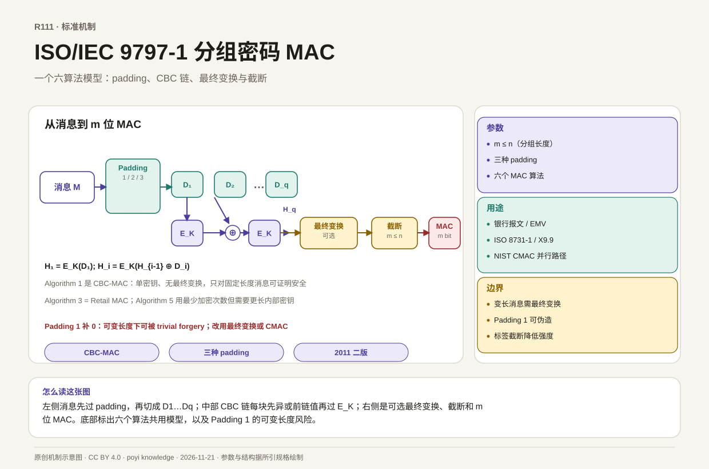
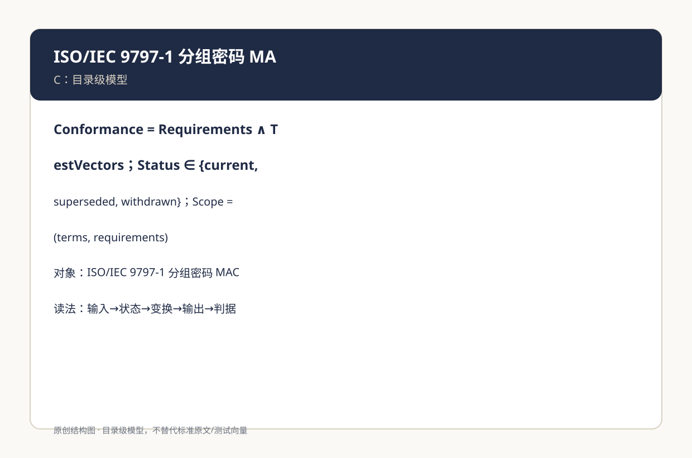

原理与机制
标准：ISO/IEC 9797-1 分组密码 MAC（ISO/IEC 9797-1 block-cipher MAC）。### 一个模型，六种算法
ISO/IEC 9797-1 不定义单一 MAC，而是定义基于 n 位分组密码的 MAC 模型：密钥派生、padding、分块、初始变换、迭代、最终变换/输出变换、截断。MAC 长度 m 不超过分组长度 n；安全强度取决于密钥长度与保密性、分组密码强度、m 以及具体机制。### Padding 与 CBC 链
标准给出三种 padding：方法 1 在末尾补 0；方法 2 先补一个 1 再补 0；方法 3 在数据前加一个 n 位长度块，再补 0。Algorithm 1 就是 CBC-MAC：H1 = E_K(D1)，H_i = E_K(H_{i-1} ⊕ D_i)，输出 H_q，可截断到 m 位。Algorithm 2/3 在末尾加一次或两次变换，Algorithm 3 又称 Retail MAC；Algorithm 4 在首尾都加变换；Algorithm 5/6 是单链优化变体。### 2011 版的关键变化
1999 年首版；2011 年第二版把 1999 的 Algorithm 5/6（两条并行 CBC-MAC）替换为单条 CBC-MAC 的更高效算法，并新增 OID Annex A、更新安全分析 Annex C、增加与旧标准关系的 Annex D。2023 年还有 Amendment 1。

为什么重要
分组密码 MAC 复用现有 AES/DES 硬件，不引入新散列；CBC 链结构简单、可流式处理，适合金融报文、智能卡和协议消息认证。它把“消息完整性/来源认证”压在同一个分组密码假设上。### 为什么需要变体
纯 CBC-MAC 只在固定长度消息下可证明安全。Padding 1 下，攻击者可在尾部追加块并保持 MAC 不变，形成 trivial forgery；加最终变换（Algorithm 2/3/4）或改用 CMAC 才能处理可变长度。截断到 m 位会把伪造概率降到约 2^-m，但也直接削弱标签强度。
应用与实例
ISO 8731-1、ANSI X9.9、X9.19、ISO 9807 的 MAC 都是 ISO/IEC 9797-1 的特例；银行报文、EMV 和 ISO 8583 场景常用 CBC-MAC/Retail MAC。NIST SP 800-38B 的 CMAC 是另一条标准化路径，二者常被并列比较。### 选型必须写全参数
只写“用 ISO/IEC 9797-1”不够。双方必须同时约定分组密码、padding 方法、算法号、MAC 长度和密钥派生方法；任何一项不一致都会导致互操作失败或安全强度下降。

边界与攻击面
标准 Annex B 明确 Padding 1 可能遭受 trivial forgery；CBC-MAC 的安全证明要求固定长度消息。对可变长度消息应选带最终变换的算法或 CMAC，并避免把 MAC 密钥与加密密钥共用。### 截断、密钥与实现
m 位标签的伪造概率约 2^-m；32 位标签在高速网络里不够。密钥派生要有域分离，验证方必须常数时间比较。实现还要评估时序、故障注入和侧信道，因为 MAC 验证失败常被用作填充 oracle。
历史与背景
ISO/IEC 9797-1:1999 首次整合 CBC-MAC 及变体；2011-03 第二版做技术修订，替换 Algorithm 5/6，新增 OID 和更新安全分析；2022 年确认仍现行，2023 年发布 Amendment 1。它源于 ISO 8731-1、ANSI X9.9 等银行 MAC 实践，后来扩展到通用 IT 安全。
技术参数与复算边界
该条目的形式模型是 (S=\min_i S_i,\quad S_i\in{\text{密钥强度},\text{分组安全},\text{实现安全}})。输入：输入：ISO/IEC 9797-1 分组密码 MAC的公开参数、密钥/随机数与消息；变量说明：S 为综合安全强度；各分量取最小值，不能只看密钥位数。 预期输出：按 ISO/IEC 9797-1 分组密码 MAC 的规范执行后得到可验证的输出或可比较的优势界。 复算必须给出输入、步骤、输出和单位；示例只演示流程，不替代标准测试向量。
复杂度由密钥长度、分组/状态规模、轮数、随机数质量和敌手模型共同决定；参数越界、版本差异与实现侧信道都可能使公式结论失效。已登记限制：该条目只给出形式模型与可复算步骤，不声称已完成生产实现、侧信道认证或第三方安全评估。
逐步示例与核验
形式模型与复算步骤
[S=\min_i S_i,\quad S_i\in{\text{密钥强度},\text{分组安全},\text{实现安全}}]
ISO/IEC 9797-1 分组密码 MAC的公开参数、密钥/随机数与消息；变量说明：S 为综合安全强度；各分量取最小值，不能只看密钥位数。1.读取标准规定的密钥/分组/模式参数。2.按标准表换算等效强度。3.取最弱分量作为系统强度。边界：公式只覆盖已登记的参数与假设；参数取值、标准版本和实现细节仍以来源为准。
参考出处
- Wikipedia search entry for ISO/IEC 9797-1 分组密码 MAC. https://zh.wikipedia.org/w/index.php?search=ISO%2FIEC%209797-1%20%E5%88%86%E7%BB%84%E5%AF%86%E7%A0%81%20MAC
- Handbook of Applied Cryptography (Menezes, van Oorschot, Vanstone). https://www.cacr.math.uwaterloo.ca/hac/